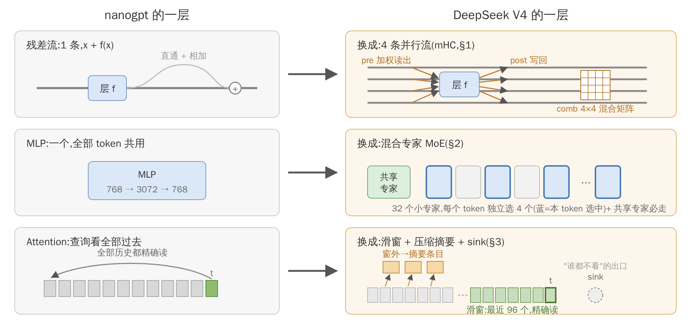
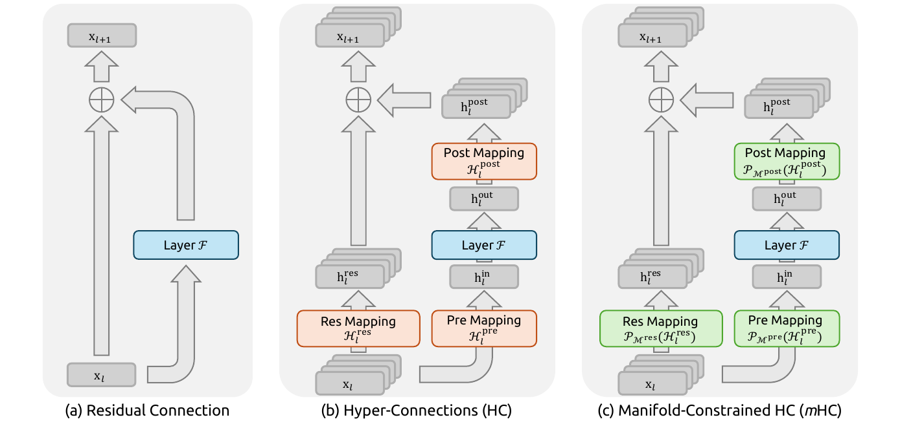
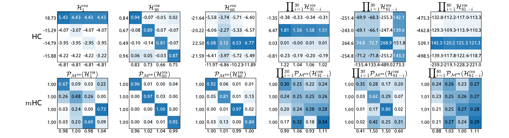
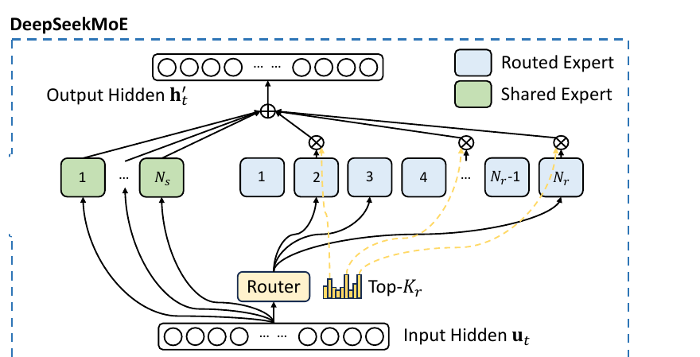
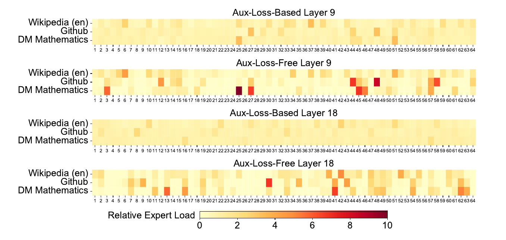
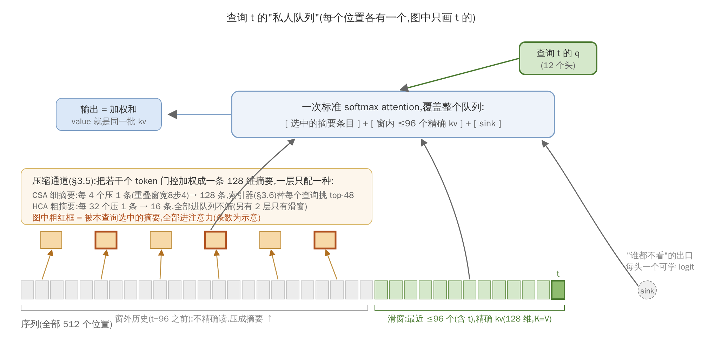
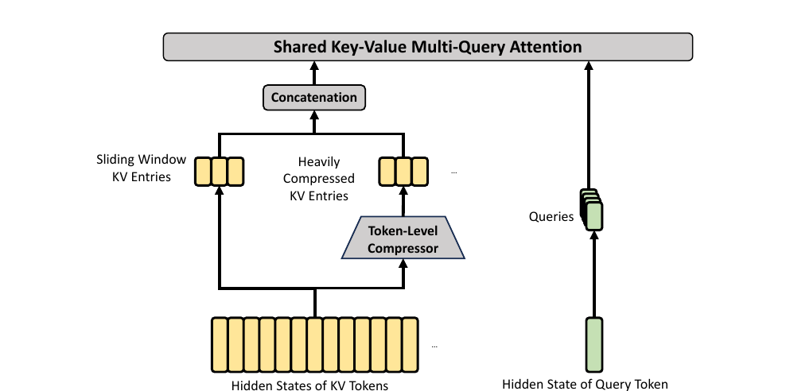
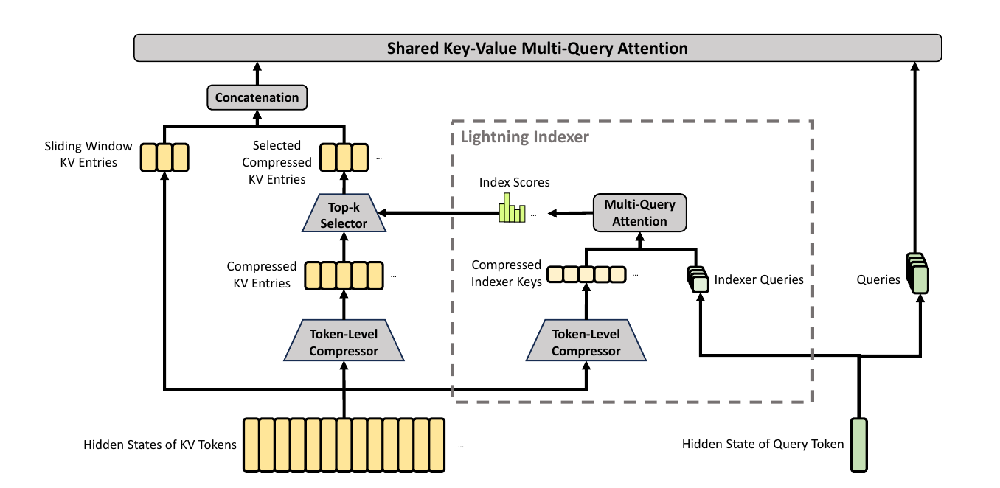
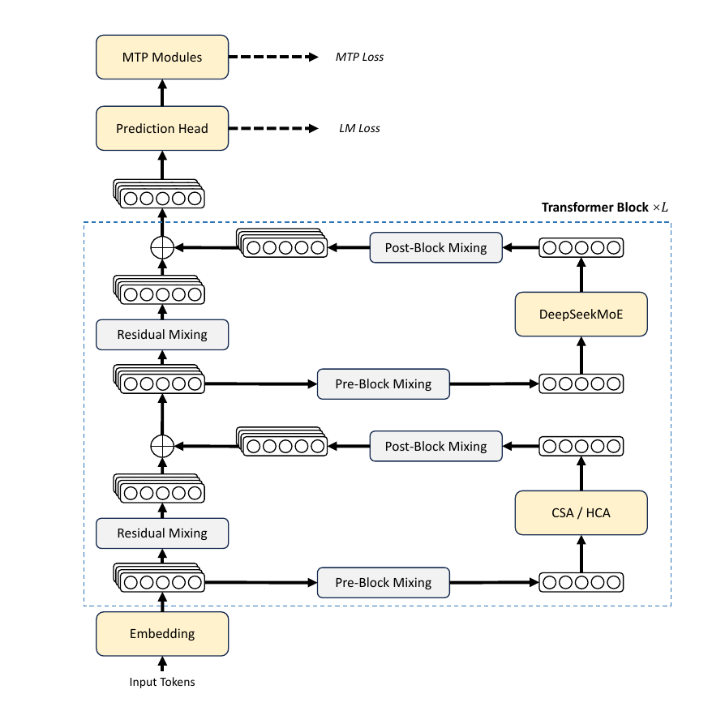
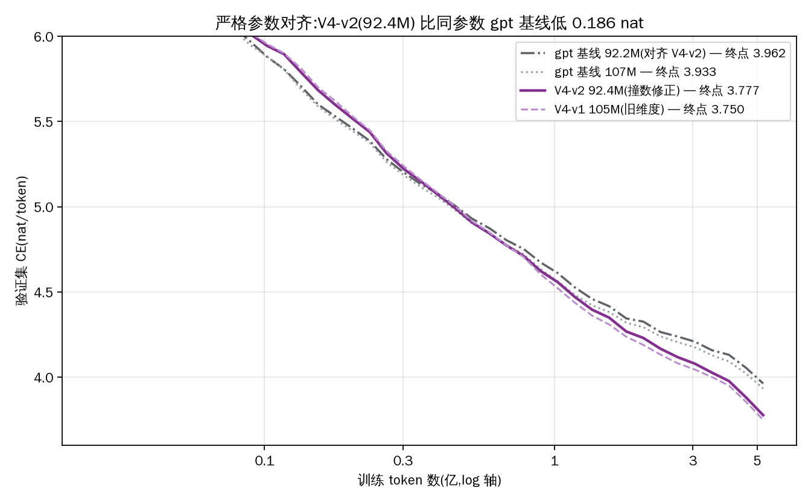

前沿架构解读:从 nanogpt 出发,逐模块讲清 DeepSeek V4
读者假设:你读得懂 nanogpt——多头因果自注意力(每层把 x 投影成 Q、K、V, softmax(QKᵀ/√d)V,因果掩码,输出投影)、残差连接 x + f(x)、MLP、RMSNorm, 并且知道 RoPE 是"把 Q 和 K 的通道两两配对、按位置旋转,使内积只依赖相对位置"。 除此之外不假设任何东西。 配套代码:
arch/nano_dsv4.py。本篇管概念与因果链,逐张量形状与代码行的对应留给读者对着代码追。mini 的固定数字(下文全部用它们):hidden 维 768,12 层,序列长 512; 一次前向处理 16 条序列(训练里这叫一个"微批":显存装得下的那部分批, 多个微批的梯度累加起来才算一整个优化步——本文只用到"16"这个数)。
引言:主菜是 DeepSeek V4
这篇解读只有一道主菜:把 DeepSeek V4 逐个部件讲清——每个张量的形状、每一步矩阵乘、每个部件为什么这么设计,都从 nanogpt 出发一路追出来,不留黑箱,讲到你能自己重写一遍为止。餐后(§6)才尝一口另外两家(GLM-5.2、Kimi K3)和前沿的几个走向。
为什么敢说"逐个部件都讲清":一个开源模型的架构,物理上就是一份 config.json(几十个数)加几百行前向代码——里面没有"外人不知道的秘密",每步都能读代码追出来、还能拿参数量和官方权重逐位对账(附录 A 演示)。但这有可知性的等级差,本篇三个对象正好各占一档:
- DeepSeek V4(主菜):权重 + 技术报告 + 推理代码全开(MIT)。我们能逐行指认、在 ~1 亿参数尺度复现、跑通对照(§5)。
- GLM-5.2:权重与代码开源;和 V4 共享大部分设计血统(transformers 里字面继承 DeepSeek 的类)。§6.1 一段带过。
- Kimi K3:写作时未开源,只有官方博客。下文凡涉及 K3 一律标 [厂商自述]——没有代码可对账,只能选择信或不信。
一句边界:架构 ≠ 模型的全部。数据配方、训练日程这些通常不公开;"搞清架构"不等于"搞清它为什么强"。
0. 总图:相对 nanogpt,V4 换了三个部件
把 nanogpt 的一层写成:
x = x + Attention(norm(x))
x = x + MLP(norm(x))
DeepSeek V4 对这三个部件各动了一刀,本文按"先框架、后填充"的顺序讲:
- 残差连接 x + f(x) 换成 4 条并行流(§1)。官方名 mHC,全称 Manifold-Constrained Hyper-Connections,直译"流形约束的超连接"—— "超连接"= 多条残差流,"流形约束"= 混合矩阵被约束在一类特殊矩阵上(§1.4)。 它贯穿每一层、决定"一层长什么样",是整个框架的骨架,所以最先讲。
- MLP 换成混合专家(MoE, mixture of experts)(§2):32 个小 MLP("专家"), 每个 token 只用其中 4 个,参数多而每 token 计算少。
- Attention 整个重建(§3,改动最大):KV 只有一个头、K 和 V 是同一个张量、 只看最近 96 个 token 的窗口、窗口外的历史被压缩成"摘要条目"。目的只有一个: 长上下文时,KV 的存储和计算都太贵,V4 选择"精确记忆只留一小窗,其余记摘要"。
三刀彼此独立,可以分开读。§4 把它们拼回一层的 forward。

图 0:三刀总图,左列 nanogpt、右列 V4,三行即 §1/§2/§3。图上的每个名字 (mHC、comb、sink……)都会在对应小节从零建立,此刻只需带走"改了哪三处"。
另外全文会几次提到 GLM-5.2:另一家(智谱)的前沿开源模型,本项目同样复现了它。 它和 V4 共享大部分设计血统,所以拿来对照最合适;提到它时只作对照,不需要你懂它。
0.5 预备件:全文用到的标准零件
这些都是社区标准件,不是 V4 的发明。先集中过一遍定义和用途,正文用到时 不再从头解释(忘了随时翻回来)。
逐元素激活函数(都作用在每个分量上):
| 名字 | 定义 | 形状特征 | 本文哪里用、干什么 |
|---|---|---|---|
| ReLU | $\max(0, z)$ | 负数归零,正数原样 | 索引器打分(§3.6):负相关截成 0,只累积正证据 |
| sigmoid | $\sigma(z) = \frac{1}{1+e^{-z}}$ | 压进 (0,1),S 形 | mHC 的 pre/post 门(§1.3):要"0~1 的独立开关" |
| silu | $z\cdot\sigma(z)$ | 平滑版 ReLU(负区有个小谷后趋 0) | SwiGLU 内部的激活(见下) |
| softplus | $\log(1+e^z)$ | 平滑版 ReLU(处处光滑、恒正) | 作为 sqrtsoftplus 的原料 |
| sqrtsoftplus | $\sqrt{\log(1+e^z)}$ | softplus 再开方压增长 | V4 路由器打分(§2.3):要"非负+单调"的分数 |
选型逻辑一句话:要门/开关用 sigmoid(有界),要非负分数用 softplus/sigmoid 一族(保序),要截断负相关用 ReLU。
RMSNorm(归一化):$\text{RMSNorm}(x) = x \big/ \sqrt{\tfrac1d\textstyle\sum_i x_i^2}$ ——除以各分量的均方根。归一后每个分量是 O(1)、向量的模是 $\sqrt d$(不是 1)。 和 LayerNorm 的关系值得抠准:对一个向量的 d 个分量,记跨分量的均值 $\bar x$、 方差 $\mathrm{Var}$,则 $\text{RMS}^2 = \mathrm{Var} + \bar x^{\,2}$(均方 = 二阶原点矩)。LayerNorm 把(均值, 方差)钉到 (0, 1);RMSNorm 只钉一个混合量 "$\mathrm{Var} + \bar x^2 = 1$"——方差和均值平方共享这 1 的预算,怎么分随它去。 实践中残差流的分量均值接近 0,两者近似重合——这正是"减均值那步省了也没事"的 原因。两种变体:无权版(纯函数,残差主干用,nanogpt 同款)和带权版 (末尾再逐分量乘一个可学向量 $w$;低秩中间量、压缩条目等处用)。作用永远是 一个:把送进下一个部件的数值幅度稳定住。
SwiGLU(一种 MLP 形制): $\;W_{down}\big(\text{silu}(W_{gate}\,x) \odot W_{up}\,x\big)$——两条并行投影, 一条过 silu 当"闸门",逐元素乘到另一条上,再投回。与 nanogpt 的单路 MLP (投影→激活→投影)相比只是形制不同,不承载新思想。本文里专家和共享专家 (§2.2)都是它。
1. 残差流(mHC):框架本身
1.1 先讲接口,不讲实现
状态。每个 token 位置携带的残差状态,从"1 个 768 维向量"变成"4 个 768 维 向量"。整个网络里逐层传递的就是这个东西(嵌入之后复制 4 份进第一层,之后四条流 就是持续存在的状态,一路流到最后,并不反复分)。对照写出来:
- nanogpt:状态 $x \in \mathbb{R}^{768}$(每 token),每过一个子层:$x \leftarrow x + f(x)$;
- mHC:状态 $S \in \mathbb{R}^{4\times 768}$(每 token),每过一个子层:$S \leftarrow \text{更新}(S, f\ \text{的输出})$。
子层 f(注意力或 MoE)的接口完全不变:它照旧吃"每 token 一个 768 维向量"的 序列、吐同样形状的序列。f 对 4 条流的存在毫不知情。
一个子层更新点的操作,三步:
- 压缩进入:把该 token 的 4 个向量合成 1 个 768 维向量,喂给 f;
- 照常运行 f:注意力/MoE 正常算(注意力照常跨 token 交互——跨 token 的事 只发生在 f 内部);
- 写回+搬运:拿 f 输出的那个 768 维向量,更新 4 个状态向量,得到新的 $S$。
就这么一个 $(4{\times}768) \to (4{\times}768)$ 的变换,每层做两次(注意力更新点一次、 MoE 更新点一次),12 层共 24 次。整批张量的形状变化:
streams (B, 512, 4, 768) ← 更新点入口:4 条流
── 第1步 合成 ──→ x_in (B, 512, 768) ← 坍缩成单条,喂给 f
── 第2步 子层 ──→ f(x_in) (B, 512, 768) ← f 照常运行,形状同 nanogpt
── 第3步 写回 ──→ streams (B, 512, 4, 768) ← 分发回流 + 流间混合
最后模型出口把 4 个向量合成 1 个交给词表头(HyperHead,只有"合成"这半边:
(B, 512, 4, 768) → (B, 512, 768))。第 1、3 步都是逐 token 位置独立做的,
每个位置有自己的权重;唯一跨 token 的还是 f 内部的注意力,和原来一样。
1.2 pre / post / comb 各管一步
三组权重都是每 token 位置动态算出来的数(§1.3 讲怎么算)。分工:每过一个更新点, 先从 4 条流里读出材料给 f,再把 f 的产出写回各流,同时旧流之间做一次 搬运/混合。对号入座:
- pre ∈ R⁴ 管第 1 步,合成 = 加权和:$x_{in} = \sum_{j=1}^4 \text{pre}_j\, S_j$ ——"这次从哪几条流各读多少";
- post ∈ R⁴ 和 comb ∈ R^{4×4} 合管第 3 步:
$$S^{new}_k \;=\; \underbrace{\text{post}_k \cdot f(x_{in})}_{f\ \text{的输出按份额写到第}\ k\ \text{条流}} \;+\; \underbrace{\sum_{j} \text{comb}[j,k]\cdot S_j}_{\text{旧流内容在流间搬运/混合}}$$
对照单流残差 $x \leftarrow x + f(x)$:取 pre = 均分 $(\frac14,\frac14,\frac14,\frac14)$、 post = 1、comb = 恒等矩阵,就完全退化回去——嵌入复制出的四条相同流在这组权重下 逐层保持相同,每条流的演化恰好就是单流的 $x + f(x)$。mHC 的本质就是把这组固定 权重换成可学、随内容变的量:4 条并行流 + 每层每位置可学的"读出/写回/搬运"路由。信息可以分工——有的流装短命的局部信息、有的流保留要一直传到深层的 信息,深层想改写一条流不必污染其他流。

图 1:残差连接三范式(mHC 论文 arXiv 2512.24880 · Figure 1;mHC 是 DeepSeek 自家论文,2025-12)。(a) 单流残差;(b) HC(Hyper-Connections,mHC 的无约束前身); (c) mHC。叠起来的纸片 = 多条流。记号桥接:图中 Pre Mapping $\mathcal{H}^{pre}$ = 本文 pre,Post Mapping $\mathcal{H}^{post}$ = 本文 post,Res Mapping $\mathcal{H}^{res}$ = 本文 comb;(c) 里包着它们的 $\mathcal{P}_{\mathcal{M}}(\cdot)$ = "摁进约束集合"的投影(§1.3 的 sigmoid 挤压、§1.4 的 Sinkhorn);⊕ 就是 §1.2 公式的相加。
1.3 三组权重怎么来
产出 pre/post/comb 的是一组很小的参数:一个矩阵加少量偏置缩放(下面第 2、3 步), 本文叫它"控制器"(非论文术语,只是个便于指代的名字)。每个更新点各有一套独立的 控制器参数——12 层 × 2 更新点 = 24 套,互不共享。单套的完整流程:
- 把该位置的 4×768 拼接成 3072 维,过一次无参数的 RMSNorm(纯稳数值);
- 过一个 3072→24 矩阵,一次出 24 个原始数,切成 4+4+16 三组(三组共用这一个投影);
- 每组配逐元素的可学偏置(24 个)与每组一个的可学缩放(3 个); 流程的形状变化:
streams (B, 512, 4, 768)
── flatten + norm ──→ (B, 512, 3072)
── 3072→24 矩阵 ──→ (B, 512, 24)
── 切 4+4+16 ──→ pre (B,512,4) / post (B,512,4) / comb 原始量 (B,512,16)
── 各自挤压 ──→ pre (B,512,4) / post (B,512,4) / comb (B,512,4,4)
- 三组走各自不同的挤压处理: - pre:sigmoid(+ 防零小 ε)→ 4 个 0~1 的独立门。注意不是 softmax: 四条流不需要竞争——"这次多读两条流、少读两条"是合法需求,softmax 会强迫 此消彼长; - post:2×sigmoid → 4 个 0~2 的独立门(允许放大到 2 倍,给子层输出留幅度); - comb:16 个数 reshape 成 4×4,先 softmax 再 Sinkhorn 迭代约 20 轮, 摁成双随机矩阵(这两个词都在下节 §1.4 定义)——为什么必须这样,单独开一节。
1.4 为什么 comb 必须是双随机矩阵
双随机 = 所有元素非负、沿两个下标方向求和都为 1。沿用 §1.2 的约定 comb[j,k],j = 来源(旧流)、k = 去向(新流),两个条件各有名字:
- 凸组合条件(固定新流 k,$\sum_j \text{comb}[j,k] = 1$):每条新流都是 旧流的凸组合——归一化的经典概率式叠加,单条输出不放大;
- 守恒条件(固定旧流 j,$\sum_k \text{comb}[j,k] = 1$):每条旧流分发到 各新流的总量恰为 1。
直觉:comb 是"4 桶水互相倒"的倒法表。自然的疑问:稳定性有凸组合条件就够了吧, 为什么还要守恒条件?不是炼丹区别,是硬数学。一个反例看穿:让 comb 的第 0 行 全为 1、其余行全为 0(即 comb[0,k]=1 对所有 k)——含义是四条新流都恰好照抄 旧流 0,每条新流都是完美的凸组合(每列恰有一个 1)。但它把 $(x,0,0,0)$ 映成 $(x,x,x,x)$:欧氏范数放大 2 倍,12 层 × 2 更新点 = 24 连乘就是 $2^{24}$。 凸组合只保证每个分量不超过旧分量的最大值($\ell_\infty$ 不涨),不保证 能量($\ell_2$)不涨:四条流同时抄同一条流,能量翻四倍。同一个反例还暴露 第二宗罪:旧流 1、2、3 的行和为 0——它们的内容被整个丢弃,几层之后 4 条流 退化成 1 条,多流设计白买。
补上守恒条件,三样东西一起到手:
- $\ell_2$ 真非扩张。记实际作用的矩阵 $A$(即代码里的 $\text{comb}^\top$): 凸组合条件给 $\|A\|_{\infty\to\infty}=1$,守恒条件给 $\|A\|_{1\to 1}=1$, Riesz–Thorin 插值立得 $\|A\|_{2\to 2}\le 1$。(记号与定理当黑盒用即可: $\|A\|_{p\to p}$ = 用 p-范数量长度时 A 最多把向量拉长几倍,∞-范数=最大分量、 1-范数=分量绝对值之和;Riesz–Thorin 说"两端的范数都不放大,中间的 $\ell_2$ 也不放大"。反例已经把必要性展示完了,这三行只是把"充分性"钉死。)
- 总量守恒、没有流死亡:守恒条件恰等价于 $\sum_k S^{new}_k = \sum_j S_j$(每条输入流在全体输出里被恰好数一次); 反例里旧流 0 被数了 4 次、旧流 1–3 被数了 0 次,集体的账就是这么破的。
- 梯度同享保障:backward 乘的是 $A^\top$,而双随机矩阵的转置还是 双随机——前向的全部非扩张保证原封适用于梯度流。
还有一条对深度至关重要:双随机矩阵对乘法封闭——24 个 comb 连乘的结果还是 双随机,信号总量逐层守恒,任何方向不指数放大。这就是"流形约束"四个字买到的东西。
不约束会怎样,论文里有训练后的实测:

图 2:训练结束后,comb 矩阵实际长什么样(mHC 论文 Figure 8)。出处:那个模型 30 层、每层 2 个残差更新点,共 60 个 comb 矩阵沿深度排成一串,信号从底流到 顶要依次穿过它们。前三列 = 从这串里挑第 1、30、60 个(最浅/中间/最深)各拍 一张;后三列($\prod$ 记号)= 沿深度连乘的结果:前 30 个连乘、后 30 个 连乘、全部 60 个连乘。(comb 本是逐 token 动态的,每张都对一段序列的 token 取了 平均。)每个方阵左缘标行和、下方标列和。上排 HC(无约束):元素可正可负,单个 矩阵行和已到 ±19,连乘后 ±500;下排 mHC(双随机约束):行和逐位 1.00(softmax 方向精确),列和 ≈1 但不精确(Sinkhorn 只迭代 20 轮),60 连乘后列和在 0.4~1.6 内漂移但有界。有界 vs 指数,就是"双随机对乘法封闭"买到的东西。
最后是怎么把任意 16 个实数摁进这个集合:softmax 沿一个方向做完,非负有了、 一个方向的和是 1 了;Sinkhorn 迭代就是"整行除以行和、整列除以列和"来回交替—— 每次归一一个方向会轻微破坏另一个方向,但破坏量逐轮衰减,约 20 轮双向同时收敛 (Sinkhorn–Knopp 定理保证正矩阵必收敛)。全程只有除法,处处可微,所以能放在 前向传播里当"激活函数"用。
1.5 成本
参数几乎免费:全部 24 个控制器 + 出口 HyperHead 合计 1.78M(占全模型 0.4%)。 真实代价是激活内存 ×4——整个网络的流动状态从 (16,512,768) 变成 (16,512,4,768),V4-mini 训练显存 21.4GiB 的大头就是它。这笔账在 mHC 论文里 不太被强调,跑了才有体感。
2. MoE:MLP 更新点填的东西
2.1 它在哪、要什么
MoE 出现在每层的 MLP 更新点(注意力那半层对它毫不知情)。先立一个贯穿本节的 事实:MLP/MoE 是逐 token 独立的——每个 token 自己过自己的网络,token 之间 毫无交互(跨 token 的信息交换全部在注意力半层)。所以 MoE 根本不关心序列结构, 代码里把 (16, 512, 768) 平铺成 (8192, 768) 来处理。
动机一句话:想让模型更强就把 MLP 加大,但密集 MLP 有税——参数加多少,每个 token 的计算量涨多少。MoE 把两件事拆开:
- 32 个小 MLP("专家"):参数总量大(本 mini 里专家占全模型参数 85%);
- 路由器给每个 token 挑 4 个专家,输出加权求和:计算量只有 4 个小 MLP;
- 1 个共享专家对所有 token 恒开:共性变换它管,路由专家学各自的"专科"。
净效果:参数多(装更多知识),每 token 计算少(只叫醒相关的专科医生)。 分工在训练中自发涌现。
整个 MoE 半层的形状变化(细节由 §2.2–2.3 交付):
x (B, 512, 768)
── 平铺(路由不关心序列) ──→ flat (8192, 768) # 8192 = B·512, B=16
── 路由器打分 ──→ 分数 (8192, 32)
── top-4 选择 ──→ 下标 (8192, 4) + 权重 (8192, 4)
── 4 个专家各算各的+加权和 ─→ routed (8192, 768) → 还原 (B, 512, 768)
── 加共享专家输出 ──→ 输出 (B, 512, 768)
族谱一句:本节这套 MoE 形制是分两代攒出来的——"细粒度专家 + 共享专家"的架构 是 DeepSeek-V2 时代的重要贡献(DeepSeekMoE 论文,2024),"无辅助损失的 偏置均衡"(§2.5)是 V3 的增量;V4 和 GLM-5.2 原样继承了这两代遗产。

图 3:DeepSeekMoE 官方示意(V3 技术报告 arXiv 2412.19437 · Figure 2 上半)。 绿色 = 共享专家(必走),蓝色 = 路由专家,Router 打分选 Top-$K_r$;⊗ = 乘路由 权重,⊕ = 求和。规模对号:原版 V4-Flash 是 $N_r$=256 选 6 + 1 共享, 本 mini 是 32 选 4 + 1 共享。
2.2 专家本体:SwiGLU,以及两个容易被坑的地方
每个专家是一个三矩阵的 SwiGLU:
$$E(x) = W_{down}\big(\, \text{silu}(W_{gate}\,x)\ \odot\ W_{up}\,x \,\big),\qquad \text{silu}(z) = z\cdot\sigma(z)$$
流程与形状(对一个被分到 $n_e$ 个 token 的专家):
x_e (n_e, 768)
── gate: 768→448 ──→ (n_e, 448) ── silu ──→ (n_e, 448) ┐
── up: 768→448 ──→ (n_e, 448) ─────────────逐元素相乘─┴→ (n_e, 448)
── down: 448→768 ──→ (n_e, 768)
与 nanogpt 的单路 MLP 相比,多了一条并行支路当"闸门"。两个防坑提示:
- up/down 名不副实:命名来自经典稠密 MLP(中间维是 hidden 的 2~4 倍,up 真 升维)。这一代 MoE 走的是"细粒度专家"流派——专家做小、数量做多(这是个 正式术语,DeepSeekMoE 论文提出),中间维反而小于 hidden(448 < 768), 于是"up"实际在降维、"down"实际在升维。把它们读作"进中间层的两条投影"和 "回 hidden 的投影"即可。
专家输出是 768 维(down 投回了 hidden),4 个输出的加权和在 768 维上做—— 必须如此,结果要放回残差流。两个实现细节:①所有专家(含共享专家)的 down 矩阵都是零初始化的——每个专家出生时输出恒为 0,整个 MoE 分支从零开始生长 (这是本训练栈的惯例:残差分支出生即恒等,深网早期稳定;§2.3 会用到这个事实); ②专家激活带钳位(gate 只钳上界 10、up 钳 ±10),防低比特数值格式下激活爆表, 照抄原版。
代码里的"专家循环"只是调度视角翻转:逻辑上"每 token 找它的 4 个专家", 但那是 8192×4 次孤零零的小矩阵乘;代码反过来循环 32 个专家,每轮把"选了我"的 token 批量抽出算完再放回。视角翻转不改数学,把碎乘法拼成大乘法。
2.3 路由:独立打分,选择与权重分离
路由器本体很小:一个 768→32 的投影,出 32 个 logit,逐元素过一个激活, 输出就是 32 个分数:
flat (8192, 768) ── 768→32 投影 ──→ logits (8192, 32) ── 激活 ──→ 分数 (8192, 32)
── 排序(分数+偏置) ──→ 下标 (8192, 4) ── 4 分数归一×1.5 ──→ 权重 (8192, 4)
激活用 sigmoid(GLM)或 sqrtsoftplus(V4;定义见 §0.5)——选它们只为 非负 + 单调。
关键设计:32 个分数彼此独立,不做全体归一(对照老式 MoE 的 32 路 softmax)。 之后:
- 选择:按"分数 + 均衡偏置 $b_i$"排序取 top-4(偏置见 §2.5);
- 权重:选中的 4 个分数在小圈子里归一(除以四者之和),再乘固定系数 1.5
(
routed_scaling,照抄原版的经验常数:给路由分支的输出一个整体倍率。 §2.2 说过两个分支都从零长起,这个系数影响的是路由分支生长的快慢)。
所以归一化没有被丢掉,而是搬了家:该竞争的地方(最终 4 个的配比)保留竞争, 不该竞争的地方(全体打分)取消竞争。分数不只管排序——选中后它就是混合权重的 原料,相对大小实打实决定 4 个专家的话语权。
共享专家不参与以上任何环节:它的输出裸加(权重恒为 1),没有 50/50 之类 的分配约束。路由侧权重和为 1 再 ×1.5、共享侧为 1,真实的相对贡献由训练决定 (§2.2:两分支的幅度都是从零长出来的)。
2.4 top-4 不可微,训练为什么没问题
先扫掉一个误会:top-k 不是采样。采样按概率抽签,有随机性且不可微;top-k 是 确定性取最大,没有随机性。它的"离散"体现在:选择边界(谁进前四)处没有梯度。
训练照样成立,机制值得细看:
$$y = \sum_{i \in \text{选中的 4 个}} w_i(x)\, E_i(x)$$
被选中专家的分数乘性地进入输出。对实际发生的这条计算图求导完全精确:梯度 顺着 $w_i$ 传回路由器——"这次选中的 4 个里,谁的输出有用就调高谁的分"。落选的 28 个这一步梯度为零,仿佛不存在。精确地说:离散选择决定的是这一步搭出了哪条 计算图;而对搭出来的图,求导是精确的。离散性没有被绕过,它被安排在了不需要 梯度的位置上。当某个落选专家的分数被间接推高越过边界,它自然开始入选——选择的 改变是分数演化的副产品。没有 Gumbel、没有直通估计器(两类专为"给离散选择造 梯度"发明的常用技巧——这里点名它们只为说明:MoE 不需要那些,普通求导就够)。
(这里埋一个 §3.6 会收割的对照:注意力里的"索引器"同样做 top-k,却必须靠蒸馏 才能学——因为它的分数只用于选择、不乘进输出,乘性通路为零。"分数是否进输出" 就是"要不要蒸馏"的分水岭。)
2.5 均衡偏置:游离在学习系统之外的调度器
治的病叫富者愈富:初期某专家纯靠运气多接了几个 token → 被训练得更多、更好 → 分数更高 → 接更多……最后三五个专家包揽全部流量,其余从没被训过、彻底废掉。 老疗法是加一个"负载要均匀"的辅助损失(主损失之外附加的小目标),但它的 梯度和语言模型损失打架。
偏置疗法把均衡整个搬出损失函数:每个专家配一个标量 $b_i$——不是参数,不被 梯度更新、不在优化器里。选择时按 $s_i + b_i$ 排序;每个微批统计各专家实际接了 多少 token,太忙的 $b_i$ 减 0.001、太闲的加 0.001(mini 按微批更新,原版按 优化步——这类"mini 与原版的差异"统一记录在项目的缩小规则表里,一份逐条 对照的清单,不影响本文的理解,下文再提到时不再注解)。就这一条反馈规则, 系统自动收敛到"大家都差不多忙"。
它就是一个训练时的动态监控/调度模块,站在可微计算之外,和梯度下降并行运行、 互不干涉。妙处全在"选择与权重分离"(§2.3):$b_i$ 只进排序、不进混合权重, 调度的手从不碰学习信号。DeepSeek 管这套叫 auxiliary-loss-free load balancing (无辅助损失负载均衡),V3 的招牌之一,V4 和 GLM 都继承。

图 4:两种疗法的负载实测(V3 报告 Figure 9)。颜色 = 相对负载(1 = 理想均匀)。 辅助损失版(第 1、3 条带)被摁得近乎处处均匀;偏置版(aux-loss-free,第 2、4 条带)大体均匀,但保留了一撮领域专科(GitHub / 数学域上的深色格)。论文以此 论证:偏置调度既治了富者愈富,又不打压真实的分工——这正是把均衡搬出损失函数 想买的东西。
2.6 为什么放弃 softmax 打分——不是可微性问题
softmax 处处可微,老式 softmax 路由求导毫无障碍。真正的考虑两条:
- 耦合 vs 解耦。softmax 是零和竞技场:抬高专家 A 的分,其他 31 个必然 被压低(分母连着所有人),梯度也顺分母全体连坐。独立打分里"A 合适"不需要 以"B 不合适"为代价,落选者梯度干净为零。专家多达 256 个(原版)时还有稀释 问题:softmax 摊下来每家分数在 1/256 量级上挤,分辨率很差。
- 偏置手术的结构前提。softmax 下往某个 logit 加偏置,会通过分母改变所有 专家的权重——"只影响选谁、不影响权重"做不到。独立打分下加偏置只动那一家的 名次,权重分毫不动。可以说独立打分是 §2.5 偏置方案的前提,两者是一套设计的两半。
(诚实标注:这两条是从机制推出的设计逻辑,与论文自述方向一致;原文对动机说得 比较简略,此处展开有"读机制读出来的"成分。)
2.7 哈希路由:最浅 3 层不学路由
浅层的 token 表征还没分化,学习路由器在那里学不出稳定分工(这是厂商给出的 动机方向;"分化/震荡"的机制细节属推断)。V4 的解法:前 3 层的"选哪 4 个专家" 改用一张冻结查表——按 token 的词表 id 直查 4 个专家。名字里的"哈希"就指 这张表的角色:一个把 token id 散列到专家集合的固定哈希函数(原版的表随权重 发布;mini 用随机但均衡的固定表,同一精神:静态、天然均衡)。 注意只有"选谁"是查表,加权分数仍由可学路由器给出:
tid2eid 表 (词表大小 32812, 4) 冻结整型
flat_ids (8192,) ── 查表 ──→ 下标 (8192, 4) # 代替 §2.3 的排序那一步
分数与权重照 §2.3 流程,不变
对照:GLM 对同一问题的解法是前 3 层干脆不用 MoE(用普通 MLP)——同病不同药。
2.8 小结:六个部件拼回一张图
一个 token 过一次 MoE 层的完整决策链:
$$x_t \xrightarrow{\text{路由器打分}} 32\ \text{个独立分数}\ s \xrightarrow[\text{(前 3 层:查表代替)}]{\text{按}\ s+b\ \text{排序取 top-4}} \mathcal{E}_t \xrightarrow{\ s\ \text{在 4 者内归一}\times1.5\ } w \longrightarrow \sum_{i\in\mathcal{E}_t} w_i E_i(x_t)\ +\ E_{sh}(x_t)$$
各部件站哪一边,一张表收拢(这是全章反复出现的那条因——选择与权重分离):
| 部件 | 在梯度计算图内吗 | 作用 |
|---|---|---|
| 路由器打分矩阵 | 在(分数乘进输出) | 学"谁合适、占多少份" |
| 32 个专家 + 共享专家 | 在(被选中的那些) | 学各自的变换 |
| top-4 选择本身 | 不在(离散,无梯度) | 决定搭哪条计算图 |
| 均衡偏置 b | 不在(手动反馈规则) | 站在系统外调度流量 |
| 哈希表(前 3 层) | 不在(冻结) | 浅层的静态保底分工 |
一句话:可学的东西都靠"分数乘进输出"这条通路获得梯度;所有"选择"类决定 都被安排在不需要梯度的位置上,由分数的演化(或系统外的调度)间接驱动。 这套安排让 MoE 不需要任何为离散性发明的特殊技巧,普通反向传播就够。
3. 注意力:一小窗精确记忆 + 压缩摘要
先说 V4 的注意力是什么,一段话讲完。
nanogpt 的注意力里,每个位置对全部过去做一次 softmax 加权读取。V4 把 "全部过去"换掉了:每个位置只精确地看最近的一小窗 token,窗外的历史被压成 少量摘要,和窗内的 token 一起参与同一次 softmax。写成图景(这是全节的 中心图,后面各小节逐件交付它的细节):
查询 t 读取的集合 = 从它自己往前数最近的 ≤96 个 token(含自己) + 若干条代表更远历史的压缩摘要 + 一个"什么都不看"的出口(sink,§3.4)。 在这个集合上做一次标准 attention。
本节把它称为查询 t 的"私人队列"。三点先行说明,帮你把图景放稳:
- "查询"就是普通 attention 里的 query,没有新含义。和 nanogpt 一样,训练时 512 个位置各自预测下一个 token,每个位置都是一个查询,各有各的队列 (窗口不同,选中的摘要也不同)。
- 队列的构成按层不同:12 层里有 2 层只有滑窗部分(没有摘要),其余 10 层 各配一种摘要通道——5 层配细摘要(叫 CSA),5 层配粗摘要(叫 HCA),交替排布。 一层只配一种,不叠加;滑窗部分则是每层都有的底座。两种通道的机制见 §3.5。
- 队列内部的排列次序无所谓——位置信息住在 RoPE 相位里,不住在次序里(§3.5 会看到摘要如何被"放"到正确的位置上)。

图 5:中心图景。三点防误读:①图里 CSA 摘要128 条(=512/4)与 kv 128 维(head_dim)恰好相等 但互不相关;窗口在此版是 96,已不撞——这三个量各有各的来历,别在它们之间 找联系;②摘要条目数为示意,真实是 CSA 128 条选 48 / HCA 16 条全用;③sink 没有 kv、不进加权和,只在 softmax 分母占一格(§3.4)。
§3.1–§3.9 逐件拆这张图(为什么只留一小窗、摘要怎么压、谁来选摘要、K=V 的 代价怎么还);§3.10 收口,给出同一图景的"训练实现"视角(一张大桌子 + 几层 掩码),两个视角数学等价。
3.1 KV 的账:从多头到单头,再到 K=V
驱动整个 §3 的是一样你训模型时不会遇到的东西:KV cache。生成是逐 token 进行的,每生成一个新 token,它的注意力要和全部历史 token 的 K、V 做内积 ——历史的 K、V 每步都一样,重算是纯浪费,所以生成器把它们缓存下来,这份缓存 就叫 KV cache。上下文一长,它的大小很快超过模型本身,整个 §3 的每一刀都是在 砍这笔账。
把账算出来之前,先交代一个和 nanogpt 不同的宽度约定(算账要用):nanogpt 里 "头数 × 每头维度 = hidden 维"(768 = 12×64);V4 把头总宽做得比 hidden 大—— 原版 Flash 是 64 头 × 512 维 = 32768,hidden 才 4096,8 倍;mini 收敛为 2 倍(12 头 × 128 = 1536 = 2×768)。头的宽度是个自由设计量,不必等于 hidden/头数。
现在算账(用 mini 的数字):每 token 每层要存 K、V 各 1536 个数,12 层就是约 3.7 万个数;假想把上下文拉到 100 万 token(原版 V4 的目标场景),cache 约 370 亿个数——比这个 mini 模型的全部权重(约 4.6 亿)还大约 80 倍。账吓人到必须动刀。
省它的第一步早已流行:让多个 Q 头共享一份 K/V。推到极端就是 MQA (multi-query attention):12 个 Q 头,K/V 只有 1 个头。缓存立刻变成 1/12。 质量当然会掉一点,V4 用滑窗+压缩通道的整套设计把它补回来。
V4 在 MQA 上再砍一刀:K 和 V 干脆用同一个张量:
$$x\ (B,512,768) \xrightarrow{\ W_{kv}:\,768\to128\ } \xrightarrow{\ \text{RMSNorm}\ } \xrightarrow{\ \text{RoPE}\ } kv\ (B,512,128)$$
每 token 每层的全部"记忆"就是这一个 128 维向量,打分时当 K 用、聚合时当 V 用。 代价要处理:K 必须做 RoPE(否则没有位置信息),而 V 按理不该带位置——现在 K=V, V 被迫也带上了旋转相位。解法在 §3.8,是全模型最精巧的一步。
3.2 Q 的构造:低秩瓶颈(独立于一切层型的改造)
先说清它的地位:这是对"q 怎么造"的改造,作用于所有层型,和滑窗、压缩通道 都无关;而且不触碰 attention 的语义——attention 只认最终的 q 向量,拿到后 打分、归一、聚合全是标准流程,q 是一步造的还是两步造的,是"供应链问题", 机制看不见。
对照 gpt.py 的一步造($q = W_q x$,768→768 一个矩阵),V4 分两步:
$$x\ (B,512,768) \xrightarrow{\ q\_a:\,768\to192\ } \xrightarrow{\ \text{RMSNorm}\ } q_{resid}\ (B,512,192) \xrightarrow{\ q\_b:\,192\to1536\ } q\ (B,512,12,128)$$
(注意 q_resid 指的是 RMSNorm 之后的 192 维量——代码里
q_resid = q_a_norm(q_a_proj(x)),norm 包含在内。)
(之后每头再过一次无可学权重的 RMSNorm、做 RoPE。)这个手法叫低秩分解
(config 字段 q_lora_rank 的 lora = low-rank,与微调技术 LoRA 同一个数学思想,
用在了前向架构本身):两个串联矩阵的乘积秩不超过中间的 192,等于强制用"瘦"
矩阵替代胖矩阵。全部动机是省参数:768×192 + 192×1536 ≈ 44 万,直接一个
768×1536 是 118 万,省了近 2/3(原版 4096→1024→32768 同理)。中间那次 RMSNorm
是给瓶颈稳数值的。
中间量 q_resid(B,512,192)要单独记住:它在层的 forward 里算好后兵分两路
——主注意力用它造正式的 q,§3.6 的索引器也从它出发造自己的小查询。瓶颈共享、
下游分家。
K 侧的 kv 向量过的 RMSNorm(kv_norm)是带可学权重的,Q 头上的那个没有
——两侧不对称,照抄原版。
3.3 部分交错 RoPE
和 nanogpt 的 RoPE 有两处不同,都只是约定差异,不改变原理:
- 部分:每头 128 维里只旋最后 40 维,前 88 维不带位置信息。经验结论是位置
通道不需要占满整头;每头通道布局固定为
[无位置 88 | 有位置 40]。 - 交错:nanogpt 常用"前半 vs 后半"配对((x₀,x₆₄),(x₁,x₆₅)…),V4 用 "相邻配对"((x₀,x₁),(x₂,x₃)…)。旋转数学完全一样,只是哪两个通道结成一对 的约定不同。
3.4 滑动窗口 + sink(每层的底座)
滑动窗口:因果掩码从"能看所有过去"收紧为" 只能看最近 96 个 token"—— 下三角掩码把直角切掉,变成宽度恒为 96 的带状下三角。
窗口一收紧,softmax 的一个老毛病被放大了,得先配个阀:softmax 强制权重和为 1, 当窗口里没有任何值得看的内容时,注意力也被迫把概率摊给某些 token、制造噪声。 V4 的阀叫 sink:每头一个可学的标量 logit $\beta_h$,当作一个"不指向任何 token 的出口"参与 softmax——模型想"这步谁都不看"时把概率倒进去即可, $\beta_h$ 越大这个头越容易放空。
带着阀,滑窗注意力的完整流程(每头独立):
- 备料:每 token 一个 $kv_s$(§3.1)、12 个头的 $q_t^{(h)}$(§3.2)。
- 打分:查询 t 对窗内每个 s($t-95 \le s \le t$)算 $\ell_{t,s} = q_t^{(h)}\!\cdot kv_s / \sqrt{128}$;
- sink:在 logit 列表末尾直接追加 $\beta_h$ 这一个数(它不经过任何 q·k 计算,所以没有 key、没有位置、也不在序列里);
- 归一:softmax 覆盖 [≤96 个真 logit + $\beta_h$],然后丢掉 sink 那格的 概率——真 token 的权重之和 ≤ 1,缺口被 sink 吸走;
- 聚合:$\text{out}_t^{(h)} = \sum_s p_{t,s}\, kv_s$(value 就是同一批 kv, K=V)。输出 out (B,512,12,128),交给 §3.8–3.9 的出口。
于是精确注意力的成本和缓存都变成常数(窗口大小),与上下文长度无关——"变常数" 说的是生成态和原版的专用实现;mini 训练照算全量再掩码(§3.10),省的是"模型要 处理的信息量",不是训练算力。窗口外怎么办?下一节。
3.5 压缩通道:把窗外历史压成摘要条目
窗口外的信息不是丢了,而是压缩了。两种带压缩通道的层型:CSA (Compressed Sparse Attention,压缩稀疏注意力)与 HCA(Heavily Compressed Attention,重压缩注意力)。它们的产品都是摘要条目:一条 128 维向量 (宽度必须等于 kv 的 head_dim——摘要要挂进同一条 KV 轴、被同一个 q 打分, 同宽是结构要求,不是巧合),追加到该查询的队列里,既当 key 被打分、也当 value 被聚合(K=V 对摘要同样成立)。
压缩这一步的具体机制(HCA,32→1):窗口内每个 token $x_i$ 出两样东西 (两个投影都是压缩器自己的矩阵,与主注意力的 kv 投影无关,只是名字像)——
$$c_i = W^{comp}_{kv}\,x_i \in \mathbb{R}^{128}\ (\text{内容,类似 value}),\qquad g_i = W^{comp}_{gate}\,x_i + b^{\text{slot}}_i \in \mathbb{R}^{128}\ (\text{门 logit})$$
($b^{\text{slot}}_i$ 是"窗内第 i 个槽位"的可学偏置,形状 (32,128);与 §2.5 的均衡偏置 $b_i$ 同符不同物。)然后逐通道做 softmax 加权:第 d 个通道,32 个 token 的门 logit 做 softmax 得权重,加权求和 32 个内容值:
$$\text{entry}_d = \sum_{i=1}^{32} \frac{e^{g_{i,d}}}{\sum_j e^{g_{j,d}}}\; c_{i,d}$$
再过一个 RMSNorm、在窗口起点位置做 RoPE。三个要点:
- 不是平均:每个通道有自己独立的一套 32 选 1 权重——128 个通道各自决定 "窗口里谁对我重要",通道 d 可以专记第一个 token、通道 d′ 可以平均全窗。 "窗口里什么值得记住"完全是学出来的。
- 它像一个没有 query 的微型注意力:权重不由 q·k 打分,由每个 token 自己报($g_i$ 从 $x_i$ 算出,"自荐")。
- 位置:条目 w 在 RoPE 意义上住在它窗口的起点(位置 32w)——相邻条目 间距正是 32,查询 t 与条目的内积给出相对相位 t−32w,摘要在整个上下文 坐标系里的位置被精确记账。
(要点 2 的一个自然疑问:为什么不给窗口配个可学的"池化查询"、做正经的 cross-attention?其实可以,这就是 Perceiver 一类的做法。V4 没这么做:一来 压缩发生在"还不知道谁会来查"的时刻,自荐让重要性与任何特定查询解耦;二来逐 通道门控比单个池化查询更灵活——单查询只能给出一套对 32 个 token 的加权、 128 维共用,逐通道则让 128 个输出维各自决定怎么加权,代价只是压缩器那两个 投影。)
因果性也交代掉:查询 t 只能看见"整个窗口都已在它过去"的条目——条目 w 覆盖
[32w, 32w+31],可见要求 32w+31 ≤ t,对 w 解出来取整就是代码里的
w < (t+1)//32。
到这里,HCA 层的机制已经完整:x (B,512,768) → 摘要 (B,16,128) (512/32 条);条目这么少,全部进每个查询的队列,不筛。

图 6:HCA 官方示意(V4 技术报告 · Figure 4)。左下黄条 = 窗内 token 的 hidden states,经 Token-Level Compressor(= 上文的门控加权)压成少量条目, 与滑窗 KV 拼接(Concatenation)后,供右侧 Queries 做共享 KV 的 MQA。 没有筛选、没有打分器——正是"歇脚点"版本。
歇口气,下面的 CSA 是它的高分辨率变体,只多两件事。
CSA 层(4→1):x (B,512,768) → 摘要 (B,128,128)。两处升级:
- 重叠窗(代码里的 Ca/Cb):硬切窗 [0..3][4..7]… 会把跨边界的语义劈开。 CSA 让每个 token 投影出两份内容和门(拼成 256 维,前半 Ca、后半 Cb), 分别贡献给两条相邻摘要。站在条目视角看最清楚——条目 w 的 softmax 门下有 8 个槽位:
| 条目 w 的槽位 | 来自谁 |
|---|---|
| 前 4 个 | 窗口 w−1 的 4 个 token,各自的 Ca 份 |
| 后 4 个 | 窗口 w 的 4 个 token,各自的 Cb 份 |
每条摘要覆盖 8 个 token、相邻摘要重叠 4 个——宽 8、步 4 的重叠窗,边界被 抹平。第 0 窗没有"上一窗",前 4 槽填零内容、门置 −∞(softmax 权重恰为 0)。 可见性条件与 HCA 同式(代 rate=4):条目 w 的 Cb 窗末尾 4w+3 恰是整个覆盖段 的末尾,Ca 部分来自更早的窗、自动更"过去",重叠不破坏公式。 2. 条目太多,要筛:mini 里 128 条全读也读得起,但原版尺度下 100 万 token 出 25 万条,全读就谈不上省。所以 CSA 配了筛选:每个查询各自只保留对它最有用 的 top-48 条——由谁判断"有用",下一节。
设计总图:这是一座注意力金字塔——近处(滑窗)原始分辨率、中程(CSA)细摘要 按需取用、远处(HCA)粗摘要全览,三档各自便宜。这套"门控池化压缩 + 便宜打分器 选块"的配方不是社区标准件,是 DeepSeek 一系的设计(2025 年初 NSA 论文起, V3.2 的 DSA 与 V4 的 CSA/HCA 都是那条血统);"稀疏注意力"的大方向则是老传统 (滑窗+全局通道 2020 年就有,压缩久远记忆可溯到 2019 的 Compressive Transformer)。
3.6 索引器:给 CSA 摘要选 top-48 的打分器
官方名 lightning indexer,中文通行译名闪电索引器,下文简称索引器。职责单一:给"查询 t 该不该看摘要 w" 打分,产出一张选择表;它不碰注意力的输出,选择在实现里就是一张掩码。
逻辑:它给出完整的打分表——(B,512,128),第 (t,w) 格 = 查询 t 看摘要 w 的 价值;因果掩码后逐行 top-48,行 t 的入选者就是查询 t 私人队列里的摘要。 原版的数量级:每个查询对 25 万条摘要打分、100 万个查询——听着吓人,但这正是 设计的核心交易:侦察必须扫全部历史,这没得省;能省的是每次侦察的单价。 对一个 (查询,摘要) 对,原版正式注意力做 64 头×512 维内积、还要聚合 value; 原版索引器做 64 头×128 维、只打分不聚合——内积维度省 4 倍,再加上省掉整道聚合、 还能用更低精度,单价便宜好几倍(mini 对应主注意力 12 头×128 vs 索引器 4 头×64)。 总账 = 便宜的全面扫描 + 昂贵的精读只花在 top-k 上。
构造(四个部件,全是缩水版,"粗筛用粗料"):
- 自己的钥匙:不用主注意力那套 128 维摘要,用自己的压缩器再压一套 64 维 粗摘要(同窗口、同 Ca/Cb、同自荐门控,只是减半):x (B,512,768) → $k^I$ (B,128,64),各自在窗口起点做 RoPE。
- 自己的查询:从共享的
q_resid(B,512,192) 出发,过它自己的投影 (192→256),得 4 头×64:$q^I$ (B,512,4,64),同样 RoPE。(这个投影在代码里 恰好也叫q_b_proj,与主注意力的q_b_proj同名不同物。) - 打分:$\text{score}(t,w) = \sum_{h=1}^4 \omega_{t,h}\, \text{ReLU}(q^I_{t,h}\cdot k^I_w/\sqrt{64})$(公式为清晰略去 ω 上的一个 1/√4 缩放,代码里有)。内积=各头独立判断相关性;ReLU 把负相关截成 0 (只累积正证据,四头不互相抵消);$\omega_{t,h}$ 是逐 token 生成的头权重 (一个 768→4 小投影从 $x_t$ 算出),按上下文调各头话语权。 输出打分表 (B,512,128)。
- 选择:盖 §3.5 的可见性掩码(窗口未完整落于过去 → −∞)后逐行 top-48, 转成布尔 keep 掩码 (B,512,128)。
一句话总图:索引器 = 一个 4 头 64 维、只算 logits 不做聚合的"前半场 attention"——普通 attention = 打分 + 聚合,它只做打分,分数本身就是最终产品。

图 7:CSA 官方示意(V4 技术报告 · Figure 3)。相对图 6(HCA)多出来的就是 虚线框 Lightning Indexer(= 本文索引器):自己的 Token-Level Compressor 压 64 维粗摘要(Compressed Indexer Keys)、自己的 Indexer Queries,框内的 Multi-Query Attention 打出 Index Scores,Top-k Selector 据此选条目。注意此图 是推理视角("先选后算":选中的才进注意力);训练态用 §3.10 的"算完再遮", 数学等价。
训练(§2.4 分水岭的收口)。你可能想:被选中的摘要在 backward 时梯度会回传, 不就训练了索引器?——不会。被选中的摘要进正式 attention 用的 logit 是主注意力 自己的 q·kv 算的,索引器的分数在选择完成后就被扔掉了;它的输出是整数下标, 整数没有导数。梯度顺着选中的摘要流向主通路(压缩器、主注意力的投影),而索引器 的参数在损失的计算图里根本不出现——梯度不是很小,是恒等于零。(对照 MoE 路由器:它的分数变成权重乘进了输出,分数留在计算图里。"分数是否进输出"就是 分水岭。)
解法是蒸馏(distillation:用一个现成的分布当老师,训练另一个打分器去复刻它), 在同一次 forward 里搭旁路:
- 老师:CSA 层的训练实现反正稠密算出了主注意力对全部 128 条摘要的 logits (§3.10 的"算完再遮"),取可见性掩码之后、top-48 掩码之前的这些 logits,softmax、按头平均,得每查询的"真实口味分布"。detach,不回传—— 老师不因学生而变。这个 softmax 只在摘要段上归一(不含滑窗 token 和 sink): 索引器只管给摘要排序,老师就只教摘要上的相对份量。必须是筛选前的完整分布: 只学"已入选的 48 条怎么分"永远学不会"谁该入选"——排序信息恰恰在落选者身上。
- 学生:索引器打分表(同样先盖可见性掩码)的 softmax——师生在同一批 可见摘要上归一,分布才可比。
- 每层算一个 $\text{KL}(\text{老师} \,\|\, \text{学生})$ 标量。KL(P∥Q) 是衡量 "分布 Q 偏离分布 P 多远"的标准量,定义 $\sum_w P_w \log(P_w/Q_w)$:Q 完全 复刻 P 时为 0,偏得越远越大;老师在前、学生在后,最小化它就是"让学生长成 老师的样子"。5 个 CSA 层各自蒸馏各的(每层自己的索引器参数,互不共享), 5 个标量平均、乘 0.01,并进总损失——对多个来源的损失求和再一起 backward 是常规操作,不意味着参数共享,各层梯度各回各家。
原版在 1M 尺度上不能稠密算,配方是两阶段(V3.2 技术报告公开,训练代码不 开源):先短暂的稠密预热(主注意力全量跑,索引器用完整分布开蒙),再切换 到稀疏训练("先选后算",老师只在入选的 k 条上表态,就只在这 k 条上蒸馏 ——全局排序感靠预热建立,之后只需维持校准)。我们的 mini 相当于把预热阶段 延长到全程:512 的长度稠密算得起,老师永远在场,机制本质不变。
3.7 RoPE 双族:一个配置选择,没有新机制
模型里有两套 RoPE 频率表,按层分,不按通道分——每头的 rope 切片就是固定的 最后 40 维,一个层内只用一个 θ:纯滑窗层查 θ=10000 的表(只看 96 距离,够用), CSA/HCA 层(连同它们的摘要和索引器)查 θ=160000 的表。这样做合法的原因值得 点破:RoPE 的相位只活在每层 attention 内部的 q·k 配对里,层与层之间没有 任何相位需要对齐,所以逐层选 θ 互不干涉。选大 θ 的理由:θ 越大每对通道转得 越慢,同样的通道数在更长距离上保持"不同距离 → 不同相位"的区分度;原版压缩 通道要覆盖 100 万 token,θ 小了远距离转过整圈、远近混淆。一条自然的一致性规则: 摘要和读它的查询必须同 θ(同频才能对消出相对相位)。mini 里 512 长度用不上 双族,保留纯为结构忠实。
3.8 输出反旋:K=V 欠下的账,在出口还清
注意力输出是 $\sum_s p_s \cdot v_s$。正常情况下 v 不带位置;V4 里 v=k,带着 位置 s 的旋转 R(s),于是输出的位置通道 $\sum_s p_s R(s) x_s$ 混进了绝对 位置相位——违背 RoPE 的根本约定(一切只依赖相对位置)。解法一行:在输出的 位置通道上按查询位置 t 反向旋转一次(R(t) 的逆 = 转负角的 R(−t)):
$$R(-t)\sum_s p_s R(s) x_s = \sum_s p_s R(s-t)\, x_s$$
每项只依赖相对距离 s−t,账还清了。此式对滑窗 kv 和压缩摘要一体成立(摘要的 位置是它的窗口起点)。
3.9 分组输出投影:输出投影的省钱因式分解,无新数学
12 头 × 128 = 1536 维的注意力输出要投回 768。nanogpt 用一个满矩阵一步到位; 原版 V4 的对应矩阵是 32768×4096 = 1.34 亿参数,单它就统治注意力的单 token 成本, 于是拆两步:
- 分组独立投影:1536 维按头分 4 组(每组 3 头 = 384 维),每组过自己的小 矩阵投到低维。等价说法:把一个大矩阵限制成块对角——4×4 的块棋盘里只许 对角线上 4 块非零,参数是同尺寸满矩阵的 1/4。代价:组间不通气。
- 混合矩阵:4 组输出拼起来,再过一个普通矩阵投回 768,把跨组交流补回来。
形状:out (B,512,12,128) → 反旋 → 视作 (B,512,4,384) → 每组 384→320 → 拼成 (B,512,1280) → 混合 1280→768 → (B,512,768)。原版的账:8 组各 4096→1024 (3360 万)+ 混合 8192→4096(3360 万)= 6700 万,比 1.34 亿省一半。它和 §3.2 的低秩瓶颈是亲戚——都是"受约束的两步矩阵替代一步满矩阵",约束形状不同 (低秩=瘦腰,分组=块对角)。诚实注记:mini 尺寸下这么拆反而比单个满矩阵多约 四分之一参数(拆分的省要输出足够宽才兑现),保留纯为结构忠实。
3.10 收口:同一次注意力的两个视角
逻辑视角(逐查询):本节开头的私人队列图景——查询 t 的队列 = ≤96 条近处 kv + 私选摘要 + sink,标准 attention。
训练实现视角(算完再遮):逐查询 gather 各自队列在 GPU 上慢;训练代码一次 算出全对 logits 的大桌子,再盖掩码——和 nanogpt 算满 512×512 再掩上三角是 同一套路(矩阵乘算满比挑挑拣拣快):
- logits (B,12,512,512+W):512 个 token 列 + W 个摘要列(CSA W=128 全在张量里, top-48 只是掩码;HCA W=16);
- 三层掩码各管各段:滑窗掩码管 512 个 token 列(距离 ≥96 或在未来 → −∞, 即保留 t−95 ≤ s ≤ t);可见性掩码 与 keep 掩码管 W 个摘要列(窗口未完整 落于过去、或未被该查询选中 → −∞);
- 拼 sink 列 → 一次 softmax → 丢 sink 格 → 聚合。
−∞ 的格子 softmax 后权重恰为 0,数学上与"从队列删掉它"完全等价。推理和 原版大尺度则走"先选后算"(真的只搬选中的条目),同一数学的另一种调度。
逐机制输入/输出速查(CSA 层,最全情形;HCA 层删 4、5 且 W=16;纯滑窗层 删 3、4、5):
| # | 机制 | 输入 | 输出 |
|---|---|---|---|
| 1 | Q 管线(§3.2) | x (B,512,768) | q (B,512,12,128) + q_resid (B,512,192) |
| 2 | KV 管线(§3.1) | x (B,512,768) | kv (B,512,128) |
| 3 | 主压缩器(§3.5) | x (B,512,768) | 摘要 (B,128,128) |
| 4 | 索引器压缩器(§3.6) | x (B,512,768) | 粗摘要 (B,128,64) |
| 5 | 索引器打分(§3.6) | q_resid + 粗摘要 + x | keep 掩码 (B,512,128) |
| 6 | 主注意力(§3.4/3.10) | q + [kv ∥ 摘要] + 三层掩码 + sink | out (B,512,12,128) |
| 7 | 出口(§3.8/3.9) | out | (B,512,768) |
4. 拼装:一层的 forward(类 NanoDSV4Block → NanoDSV4)
现在把三个部件合上。一层的 forward(对照 nanogpt 的两行):
# streams: [16, 512, 4, 768] —— 4 条并行流
post, comb, collapsed = attn_hc(streams) # mHC 控制器:算权重 + 坍缩成 1 条
xin = norm(collapsed)
q_resid = q_a_norm(q_a_proj(xin)) # Q 的 192 维中间量(§3.2),在这里算好,
attn_out, aux = attn(xin, q_resid, ...) # 因为注意力和索引器(§3.6)都要用它
streams = post·attn_out + combᵀ·streams # 输出分发回流 + 流间混合(§1.2 的公式)
post, comb, collapsed = ffn_hc(streams) # 第二个更新点,同样流程
mlp_out = moe(norm(collapsed), token_ids) # MoE(§2;token_ids 给哈希路由用)
streams = post·mlp_out + combᵀ·streams
整个模型的 forward:嵌入(词嵌入,外加 nanoinfra 训练栈统一的 token 类型嵌入——
标记"这是文本 token",与本架构无关,初始为零)→ 过一次无参 norm → 复制成
4 条流 → 12 层如上 → HyperHead 坍缩回 1 条 → norm → 交给外面的词表头算损失。
训练时各层产生的索引器 KL(§3.6)逐层累加、取平均、乘 0.01,由训练脚本加到
总损失上。

图 8:V4 官方总架构(V4 技术报告 · Figure 2),和上面的 forward 逐行对得上。 对号:Pre-Block Mixing / Post-Block Mixing / Residual Mixing = 本文的 pre / post / comb(§1.2),叠片 = 4 条流,CSA/HCA 与 DeepSeekMoE 即 §3 / §2; 图顶的 MTP Modules(多 token 预测,V3 遗产)本 mini 未复现。
最后一句边界声明:这份 mini 只实现训练态(一次吃整段序列)。原版代码里 一半以上的复杂度在伺候逐 token 生成时的缓存管理(滑窗缓存滚动、压缩器跨步状态), 这些在训练的一次前向里全都用不到,mini 全部砍掉——这也是它能保持 400 余行可读 的原因。
5. 复现对照:同参数下,V4 比现代 GPT 基线低 0.186 nat
架构讲完了,该看它在秤上重几两。把 nano-dsv4 和一个参数几乎完全相等的现代 GPT 基线(gpt.py,NanoChat 式:RoPE + SwiGLU + RMSNorm 的现代 decoder)放进同一训练栈,同数据(FineWeb)、同预算(4000 步 × 131072 token ≈ 5.24 亿 token)、同评测,只让"架构"这一个变量不同——这本身就是一个干净的对照实验。

图 9:同预算下的验证集 CE(log-token 轴)。四条线:两条 V4(实线 v2 92.4M、虚线 v1 105M)几乎重合、全程压着两条 gpt 基线(92.2M / 107M)。
终点数字(同数据同评测):
| 模型 | 非词表激活参数 | 终点 val CE |
|---|---|---|
| gpt 基线(现代 GPT) | 92.2M | 3.962 |
| nano-dsv4 | 92.4M | 3.777 |
参数几乎完全相等(92.4M vs 92.2M),V4 低 0.186 nat。而且这不是参数堆出来的:把基线一路加到 107M 激活,终点也才 3.933——V4 用更少的参数还低 0.16 nat。加 26% 参数只买到 0.03 nat,换架构却买到 0.186。优势是架构,不是参数。
三点诚实注记:
- 尺度声明:1 亿参数、5 亿 token 测不出、也不该测"谁更强"——各架构的设计动机(1M 上下文、万亿参数)在这个尺度根本不在场。这张图诚实的读法是"同 token 谁学得多",外加"这套滑窗 + 压缩 + mHC + MoE 的组合在小尺度上训练完全健康"。
- 墙钟不可比:基线编译后 MFU ~57%,nano-dsv4 是 eager 实现(~8%,数据依赖的专家循环 / top-k 挡了编译),同预算墙钟差好几倍。CE-对-token 的比较不受影响,CE-对-墙钟是另一回事。
- 跑了才有体感的账:训练显存 21.4 GiB 的大头不是注意力,是 mHC 的 4 条残差流(激活 ×4)——论文里不强调的真实代价(§1.5 已记)。
6. 餐后:另外两家,和前沿在重开的几个老变量
主菜是 V4。这一节把另外两家各尝一口,再退一步看:V4 在残差、注意力、MoE 三个部件上各走了一步,而前沿正沿着这几个轴继续往下走。
6.1 GLM-5.2:保留 MLA + 稀疏注意力
GLM 走的是和 V4 不同的注意力路线——它没扔 MLA。
- MLA(低秩压 KV):不像 V4 砍成单头 K=V,MLA 换个方向砍每份的维度——每 token 每层只存一个 512 维压缩向量(所有头共享)+ 一个 64 维位置通道,用时由展开矩阵现场解压成全部头的 K/V,存储约 1/57。位置为什么单走一条 64 维通道?因为"先压缩再旋转"和"先旋转再压缩"不可交换,RoPE 没法被压缩矩阵统一吸收——于是把位置剥出来(decoupled RoPE)。这和 V4 §3.8 的反旋是同一个"K/V 带了相位怎么办"的问题、不同的答法。
- DSA 稀疏 + IndexShare:注意力计算用同款索引器(§3.6)选 top-k 精读;GLM 的增量是观察到相邻层的选择高度相似,于是每 4 层只真跑 1 层索引器、其余复用(78 层里 21 full + 57 shared),省侦察的钱。
一句话:V4 与 GLM 在同一张血统图上分叉——V4 抛 MLA 换"滑窗 + 压缩",GLM 留 MLA 加"稀疏选择"。 同问题两答法,拿来互为对照最合适。
6.2 Kimi K3:线性注意力 [厂商自述]
K3 未开源,以下全部 [厂商自述]。它建立在 KDA(Kimi Delta Attention)上——线性注意力混合架构:把随长度二次方的 softmax 注意力,换成随长度线性的递归形式(delta 规则一系),再混少量全注意力层兜底。这是与"压缩 / 稀疏化 softmax"完全不同的第三条路:不省 softmax 的账,而是换掉 softmax 本身。细节未公开,不可对账。
6.3 前沿在重开的三个老变量
把三家放在一起看,一个规律浮出来:"堆 N 个各不相同的层 + 单条残差 + 全 softmax 注意力"这套 2020 年的默认配置,前沿正在沿三个轴逐一重开——
- 序列上的递归:线性注意力(K3 的 KDA)用一个常数大小的状态沿序列往下滚,换掉"每个查询看全部历史"的 softmax。代价是状态有损(delta 规则记不下全部),换来计算随长度线性。
- 深度上的递归:looped / universal transformer——与其堆 N 个各自独立的层,不如让少数几层权重跨深度反复迭代(同一层走 M 遍,等效深度 = 层数 × 遍数,参数却只有几层的量)。它用"多算力"换"多参数":同一套权重,想得更久。市场传言若干前沿闭源模型走的正是这条深度递归的路。
- 残差拓扑:2015 年的残差连接
x + f(x),在 2026 年重新成为设计变量。V4 的 mHC(§1)把单条残差换成 4 条流 + 双随机混合;K3 自述的 AttnRes(跨深度选择性检索表征)是同族问题的另一答案。残差不再是"加一下"的固定管道,而是"信息在深度方向怎么流动"的可学结构。
主菜里 V4 已经在这几个轴上各走了一步:mHC(轴 3)、滑窗 + 压缩(在 softmax 框架内省注意力,是区别于线性注意力的另一条路)、MoE(参数轴,与这三轴正交)。餐后这一节想说的是:这些轴前沿还远没走到头——你在主菜里读懂的每个部件,都是一个仍在被重新设计的变量。
附:速查表(mini 的全部形状)
| 张量 | 形状 | 出处 |
|---|---|---|
| 流 streams | [16, 512, 4, 768] | §1 |
| mHC 控制器 | 3072→24(每更新点;24 = pre 4 + post 4 + comb 16) | §1.3 |
| 专家 | 32 个 768→448→768,top-4 + 1 共享 | §2 |
| Q | 16, 512, 12, 128 | §3.2 |
| KV(=K=V) | [16, 512, 128] | §3.1 |
| 滑窗 logits | 16, 12, 512, 512 | §3.4 |
| HCA 摘要 | 16, 16, 128 | §3.5 |
| CSA 摘要 | 16, 128, 128 | §3.5/§3.6 |
| sink | 每头 1 个标量,12 个 | §3.4 |
| RoPE | 两套表:θ=1e4(滑窗层)/1.6e5(压缩层) | §3.7 |
附录 A:从 config.json 手算参数量,并与官方权重逐位对账
"架构完全可知"不是口号,是可以操作的。演示对象:DeepSeek V4-Flash。全程只用两样公开
材料:config.json 和权重清单(safetensors 索引;每个分片文件的头部记录着它所含全部
张量的形状与数据类型,用 HTTP Range 请求只抓头部即可,不必下载 159GB 权重)。
第一步,从 config 手算专家参数。config 给出:n_routed_experts=256、
moe_intermediate_size=2048、hidden_size=4096、num_hidden_layers=43。
每个专家是一个 SwiGLU MLP:gate 和 up 两个 4096→2048 投影加一个 2048→4096 的 down,
共 3 × 2048 × 4096 = 25.17M。于是:
$$256 \text{ 专家} × 25.17M × 44 \text{ 层} = 283.4B$$
层数为什么是 44 不是 43?因为 num_nextn_predict_layers=1——那层 MTP 头自带一整套
专家。这个细节是对账时"差了整整一层专家"的缺口逼出来的:手算 43 层得 277B,清单实测
283.4B,差值 6.44B 恰好等于一层的专家量。对账的价值就在这里:漏掉的部件会以精确的
缺口形状暴露自己。
第二步,读权重清单验证。汇总全部 46 个分片头部的张量形状(共 69187 个张量), 按数据类型分组:
| 数据类型 | 元素数 | 是什么 |
|---|---|---|
| I8 | 141.7B | 专家权重:FP4,两个参数装一个字节,故真实参数 = 141.7×2 = 283.4B ✓ |
| F8_E8M0 | 8.86B | FP4 的块缩放因子:每 32 个参数一个,283.4/32 = 8.86 ✓(MXFP4 格式的物理证据) |
| F8_E4M3 | 6.02B | 主干(注意力等)的 FP8 权重 |
| BF16 | 1.42B | 词嵌入、norm、压缩器/索引器分支(量化敏感件保留 bf16) |
三个数字互相咬合:专家总量与手算吻合、缩放因子数恰为 1/32、打包字节数恰为 1/2。
config 里的 expert_dtype: "fp4" 四个字符,在权重文件里就是这三条可验证的算术。
汇总:V4-Flash ≈ 291B 总参数,约 15B 激活(top-6/256 路由专家 + 共享专家 + 注意力 + 词表),路由专家占总参数的 95% 以上——现代 MoE 模型的参数几乎全部住在 专家里,注意力和其余一切只占零头。
同法对 GLM-5.2 再来一遍(282 个分片,全 BF16):实测总量 753.3B,官方口径 744B—— 缺口 9.3B,又恰好是一层专家(256 × 3×6144×2048 = 9.66B):官方总数不计 MTP 层, 权重文件里有。路由专家 734.4B = 76 层(75 MoE + 1 MTP)× 9.66B,逐位吻合,占 97.5%; 激活账 top-8 专家 22.6B + 共享 2.9B + 注意力与索引器 13.2B + 词表 1.9B ≈ 40.6B, 与官方"40B 激活"闭合。两家模型、同一个"缺一层专家"的缺口、同一个解释—— 对账不是仪式,它每次都会教你一点 config 里读不出的东西。
附录来源:huggingface/transformers
models/deepseek_v4、models/glm_moe_dsa; deepseek-ai/DeepSeek-V4-Flash·Pro、zai-org/GLM-5.2 的 config.json。